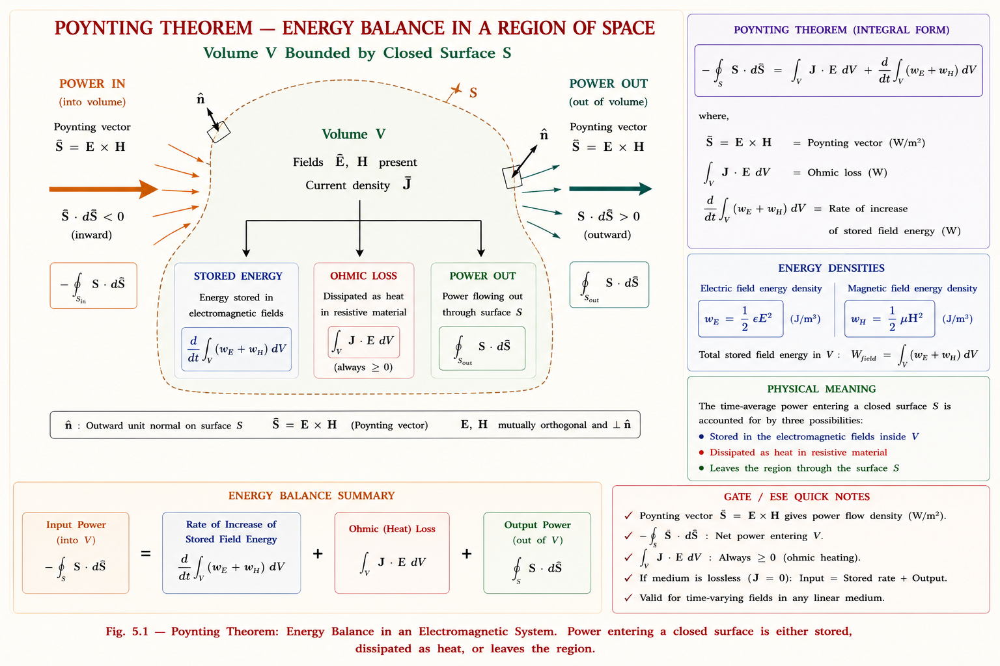
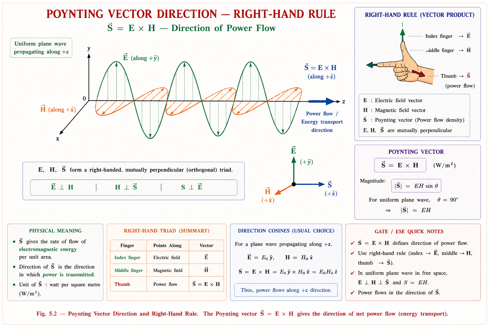
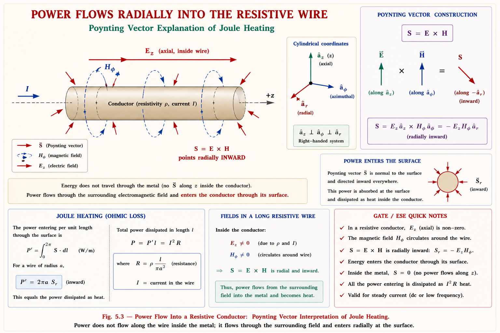

Energy conservation in electromagnetic fields, the Poynting vector, power density, and stored field energy — complete derivation, physical interpretation, and GATE/IES exam-focused coverage with solved numericals.
Every electrical machine, antenna, transmission line, and microwave oven works because energy moves from one place to another through electromagnetic fields. But here is a question that puzzled physicists for decades: when a battery lights a bulb through a wire, does the energy travel inside the copper wire, or does it travel through the space around the wire?
The surprising and beautiful answer — first given by John Henry Poynting in 1884 — is that energy does not flow through the conductor at all. It flows through the electromagnetic field in the space surrounding the conductor, and only "leaks" into the wire to supply the I²R loss. This single idea — that electromagnetic energy is a real, locatable, flowing quantity — is the foundation of how we analyse power flow in transmission lines, radiation from antennas, propagation in waveguides, and energy storage in capacitors and inductors.
Poynting's theorem is simply the law of conservation of energy written in the language of E and H fields. Just as Kirchhoff's laws are conservation of charge and energy applied to circuits, Poynting's theorem is conservation of energy applied to the electromagnetic field itself — valid at every point in space, at every instant of time.
This chapter is the bridge between Maxwell's equations (Chapter 4) and electromagnetic wave propagation (Chapter 6). Once you know the fields E and H exist and obey Maxwell's equations, Poynting's theorem tells you how much power those fields are carrying — which is exactly what you need to design a transmission line, size an antenna, or compute the heating in a microwave cavity.
In circuit theory you learned that power delivered by a source equals power dissipated in resistances plus the rate of change of energy stored in inductors and capacitors:
Poynting's theorem is the field-theory generalisation of this exact same statement. Instead of lumped elements, we now have continuous electric and magnetic fields filling a volume of space, and instead of wires carrying current in and out, we have a closed surface through which electromagnetic power flows in or out.
At every instant, electromagnetic power entering a region of space does exactly one of three things: (1) it gets dissipated as heat in any resistive material present (ohmic loss), (2) it increases the energy stored in the electric and magnetic fields within that region, or (3) it flows back out through the bounding surface. Nothing is created and nothing is destroyed.

This is precisely analogous to water flowing into a tank: water entering the tank either raises the water level (stored energy increases), leaks out through a hole (dissipation), or flows out through an open pipe (power leaving the surface). The tank itself never creates or destroys water — only conservation applies.
We start from the two Maxwell curl equations for a linear, isotropic medium with permittivity \(\varepsilon\), permeability \(\mu\), and conductivity \(\sigma\) — exactly the same equations you derived in Chapter 4.
Here \(\mathbf{J} = \sigma \mathbf{E}\) is the conduction current density (Ohm's law in point form), and \(\mathbf{D} = \varepsilon\mathbf{E}\), \(\mathbf{B} = \mu\mathbf{H}\) for a simple linear medium. Our goal is to combine these two equations into a single scalar statement about power. The standard trick — found in every electromagnetics textbook — is to take the divergence of \(\mathbf{E} \times \mathbf{H}\) using a vector identity.
From vector calculus, for any two vector fields \(\mathbf{A}\) and \(\mathbf{B}\):
Setting \(\mathbf{A} = \mathbf{E}\) and \(\mathbf{B} = \mathbf{H}\) gives us the starting point of the entire derivation:
Replace \(\nabla\times\mathbf{E}\) and \(\nabla\times\mathbf{H}\) using Maxwell's equations from above:
Expanding the right-hand side:
\(\mathbf{E} \cdot \mathbf{J}\) has units of W/m³ — it is the familiar Joule-heating power density you already know from circuit theory (compare with \(VI\) for a resistor). The terms \(\mathbf{H} \cdot \frac{\partial\mathbf{B}}{\partial t}\) and \(\mathbf{E} \cdot \frac{\partial\mathbf{D}}{\partial t}\) are the rates of change of magnetic and electric energy density respectively — we will show this explicitly in Step 3.
For a linear medium, \(\mathbf{D} = \varepsilon\mathbf{E}\) and \(\mathbf{B} = \mu\mathbf{H}\), so we can write each term as the time derivative of a quadratic (energy-like) quantity:
This step uses a simple calculus fact: for any vector \(\mathbf{A}\), \(\mathbf{A} \cdot \frac{\partial\mathbf{A}}{\partial t} = \frac{1}{2}\frac{\partial(\mathbf{A}\cdot\mathbf{A})}{\partial t} = \frac{1}{2}\frac{\partial(A^2)}{\partial t}\). The quantities \(\frac{1}{2}\varepsilon E^2\) and \(\frac{1}{2}\mu H^2\) are exactly the electric and magnetic energy densities you derived in electrostatics and magnetostatics (Units: J/m³). Substituting back:
Integrate both sides over an arbitrary volume V bounded by closed surface S, then convert the volume integral of a divergence into a surface integral using the divergence theorem:
The minus sign in \(-\oint_S(\mathbf{E}\times\mathbf{H})\cdot d\mathbf{S}\) appears because \(d\mathbf{S}\) conventionally points outward from the closed surface. So \(-\oint_S(\mathbf{E}\times\mathbf{H})\cdot d\mathbf{S}\) is the power flowing inward. Many textbooks instead write the theorem with the outward convention as \(\oint_S(\mathbf{E}\times\mathbf{H})\cdot d\mathbf{S} + \frac{d}{dt}\int_V\left(\frac{1}{2}\varepsilon E^2+\frac{1}{2}\mu H^2\right)dV = -\int_V\sigma E^2\,dV\), or rearrange terms — always check which direction your textbook's \(d\mathbf{S}\) is pointing before comparing formulas.
The quantity \((\mathbf{E} \times \mathbf{H})\) that appeared naturally in our derivation is so important that it is given its own name and symbol: the Poynting vector.
\(\mathbf{S} = \mathbf{E} \times \mathbf{H}\) is the instantaneous power flow per unit area — the electromagnetic power density — at a point in space. Its magnitude tells you how many watts cross each square metre of area perpendicular to \(\mathbf{S}\), and its direction (given by the right-hand rule, \(\mathbf{E}\) rotated into \(\mathbf{H}\)) tells you which way the energy is travelling. \(\mathbf{S}\) is a vector field defined at every point, just like \(\mathbf{E}\) and \(\mathbf{H}\) themselves.
Using the Poynting vector, our integral theorem from Section 5.3 can be written compactly as:
Or, defining total instantaneous power crossing the surface as \(P\), ohmic loss as \(P_{\text{loss}}\), and total stored energy as \(W = W_E + W_H\), the theorem reduces to the elegant statement:

To find the total instantaneous power \(P\) (in watts) crossing any surface — not necessarily closed — integrate the normal component of \(\mathbf{S}\) over that surface:
| Quantity | Symbol | Formula | SI Unit |
|---|---|---|---|
| Poynting vector (power density) | \(\mathbf{S}\) | \(\mathbf{E} \times \mathbf{H}\) | \(\text{W/m}^2\) |
| Total power through surface | \(P\) | \(\int_S \mathbf{S}\cdot d\mathbf{S}\) | \(\text{W}\) |
| Ohmic power loss density | \(p_{\text{loss}}\) | \(\sigma E^2 = \mathbf{J}\cdot\mathbf{E}\) | \(\text{W/m}^3\) |
| Electric energy density | \(w_E\) | \(\frac{1}{2}\varepsilon E^2\) | \(\text{J/m}^3\) |
| Magnetic energy density | \(w_H\) | \(\frac{1}{2}\mu H^2\) | \(\text{J/m}^3\) |
The Poynting vector is not just a mathematical convenience — it correctly predicts where energy physically travels in every electromagnetic system. Below are practical situations across power systems, machines, and modern technology where engineers explicitly use \(\mathbf{S} = \mathbf{E} \times \mathbf{H}\).
Conductors do not carry electromagnetic energy — they carry current and guide the field pattern. The energy itself is always carried by the field in the surrounding space, described completely by \(\mathbf{S} = \mathbf{E} \times \mathbf{H}\). This reframing is essential for understanding transmission-line theory, waveguides, and radiation correctly.
This is the single most famous example used in every standard electromagnetics textbook to prove that \(\mathbf{S}\) really does predict the correct power flow. Consider a long straight cylindrical conductor of radius \(a\), resistivity \(\rho\), and length \(l\), carrying a steady current \(I\), with a voltage drop \(V\) across its length.
Inside the wire, the conduction current creates an axial electric field along the wire (from Ohm's law, \(E = J/\sigma\)), and the current creates an azimuthal magnetic field circling the wire (from Ampère's law). At the conductor's surface (\(r = a\)):
Taking the cross product \(\mathbf{S} = \mathbf{E} \times \mathbf{H}\) of an axial \(\mathbf{E}\) and azimuthal \(\mathbf{H}\) gives a vector pointing radially inward, directly into the surface of the wire:

Integrate \(\mathbf{S}\) over the cylindrical surface of the wire (\(\text{area} = 2\pi a l\)) to get total inward power:
Since \(V = IR\) for a resistor, this simplifies to the familiar circuit-theory result:
This is the single strongest proof that the Poynting vector is physically real and not just a mathematical bookkeeping trick. The field-theory calculation, done with zero knowledge of circuit theory, reproduces the exact \(I^2 R\) formula every electrical engineer already knows. It also proves energy enters the wire radially from the surrounding space, not by flowing lengthwise through the copper.
Most GATE and IES problems give \(\mathbf{E}\) and \(\mathbf{H}\) as phasors (sinusoidal steady-state, like AC circuit analysis), not as instantaneous time-domain fields. Just as in single-phase AC circuits where real power needs a \(\cos\phi\) factor, the time-average Poynting vector needs a similar treatment because \(\mathbf{S} = \mathbf{E} \times \mathbf{H}\) involves a product of two sinusoids.
In AC circuit theory, instantaneous power \(p(t) = v(t)i(t)\) averages to \(\frac{1}{2}V_m I_m \cos\phi\), NOT \(\frac{1}{2}\text{Re}(VI)\). The same care is needed here: \(S(t) = E(t) \times H(t)\) is a product of real instantaneous quantities, so you must either multiply the real time-domain expressions directly, or use the correct phasor-power formula shown below.
If the field phasors are \(\mathbf{E}\) and \(\mathbf{H}\) (complex, peak-amplitude convention), the time-average Poynting vector is found using a formula directly analogous to AC circuit power:
Here \(\mathbf{H}^*\) is the complex conjugate of \(\mathbf{H}\). This formula is the direct EM-field analogue of the single-phase AC power formula \(P_{\text{avg}} = \frac{1}{2}\text{Re}(VI^*)\) that you already know from circuit theory — the factor of \(\frac{1}{2}\) comes from time-averaging \(\cos^2(\omega t)\) over one cycle, which equals \(\frac{1}{2}\).
For a uniform plane wave travelling in a lossless medium, \(\mathbf{E}\) and \(\mathbf{H}\) are exactly in phase, and the average power density simplifies to the familiar form used throughout antenna and wave-propagation problems:
where \(\eta\) is the intrinsic impedance of the medium (\(\eta_0 = 377\,\Omega\) for free space) and \(E_0, H_0\) are peak field amplitudes. This single formula is used to compute radiated power, solar irradiance, and antenna far-field power density — you will use it heavily in Chapter 6 (Wave Propagation).
The two energy-density terms that fell out of our derivation in Section 5.3 are not new — you have already met them as the energy stored in a charged capacitor and a current-carrying inductor. Poynting's theorem simply confirms that these same formulas hold true at every point in space, even for fields that vary with time.
Total stored electromagnetic energy in a volume V is obtained by integrating these densities:
For a parallel-plate capacitor, integrating \(w_E\) over the volume between the plates gives exactly \(W_E = \frac{1}{2}CV^2\). For a solenoid inductor, integrating \(w_H\) over the coil's volume gives exactly \(W_H = \frac{1}{2}LI^2\). This is not a coincidence — the field-theory formulas are the fundamental definitions; the circuit formulas \(\frac{1}{2}CV^2\) and \(\frac{1}{2}LI^2\) are derived consequences for specific geometries.
| Energy Type | Field-Theory Formula | Circuit Equivalent | Stored In |
|---|---|---|---|
| Electric | \(\frac{1}{2}\varepsilon E^2 \; (\text{J/m}^3)\) | \(\frac{1}{2}CV^2 \; (\text{J})\) | Dielectric between capacitor plates |
| Magnetic | \(\frac{1}{2}\mu H^2 \; (\text{J/m}^3)\) | \(\frac{1}{2}LI^2 \; (\text{J})\) | Core / space inside inductor windings |
| Total EM energy | \(w_E + w_H\) | — | Entire field region (sums independently) |
Remember "\(\frac{1}{2} \varepsilon E^2\) Electric, \(\frac{1}{2} \mu H^2\) Magnetic" — both formulas have the identical structure \(\frac{1}{2} \times (\text{material property}) \times (\text{field})^2\). The material property pairs naturally: \(\varepsilon\) goes with \(\mathbf{E}\) (both relate to electric), \(\mu\) goes with \(\mathbf{H}\) (both relate to magnetic behaviour). If you remember the structure "half times property times field-squared," you can never mix up which goes with which.
These are the errors that repeatedly cost marks in GATE and IES — and the misunderstandings that lead students astray when applying Poynting's theorem.
Examiners frequently give \(\mathbf{E}\) and \(\mathbf{H}\) with a phase difference and ask for average power, hoping students will forget the \(\cos\phi\)-type factor that emerges from the \(\text{Re}[\mathbf{E}\times\mathbf{H}^*]\) operation. Always reduce \(\mathbf{E}\) and \(\mathbf{H}\) to phasor form first, then apply \(S_{\text{avg}} = \frac{1}{2}\text{Re}(\mathbf{E}\times\mathbf{H}^*)\) — never multiply instantaneous peak values directly when a phase angle is involved.
A single reference table consolidating every quantity introduced in this chapter, with formula, meaning, and GATE-relevant notes.
| Quantity | Formula | Unit | GATE Note |
|---|---|---|---|
| Poynting vector \(\mathbf{S}\) | \(\mathbf{E} \times \mathbf{H}\) | \(\text{W/m}^2\) | Direction \(\perp\) both \(\mathbf{E}\) and \(\mathbf{H}\) |
| Total power \(P\) | \(\oint_S \mathbf{S}\cdot d\mathbf{S}\) | \(\text{W}\) | Closed surface integral |
| Average power \(S_{\text{avg}}\) | \(\frac{1}{2}\text{Re}(\mathbf{E}\times\mathbf{H}^*)\) | \(\text{W/m}^2\) | Most-asked GATE formula — peak phasors |
| Plane-wave \(S_{\text{avg}}\) | \(E_0^2 / 2\eta\) | \(\text{W/m}^2\) | \(\eta = 377\,\Omega\) in free space |
| Ohmic loss density | \(\sigma E^2 = \mathbf{J}\cdot\mathbf{E}\) | \(\text{W/m}^3\) | Integrate over \(V\) for total loss |
| Electric energy density | \(\frac{1}{2}\varepsilon E^2\) | \(\text{J/m}^3\) | Matches \(\frac{1}{2}CV^2\) formula |
| Magnetic energy density | \(\frac{1}{2}\mu H^2\) | \(\text{J/m}^3\) | Matches \(\frac{1}{2}LI^2\) formula |
| Poynting's Theorem | \(-\oint_S \mathbf{S}\cdot d\mathbf{S} = \int_V \sigma E^2\,dV + \frac{dW}{dt}\) | \(\text{W}\) | Energy conservation in field form |
\(\mathbf{S} = \mathbf{E} \times \mathbf{H}\) is instantaneous power density (\(\text{W/m}^2\)). Direction by right-hand rule: fingers along \(\mathbf{E}\), curl to \(\mathbf{H}\), thumb gives \(\mathbf{S}\).
\(-\oint_S \mathbf{S}\cdot d\mathbf{S} = \int_V \sigma E^2\,dV + \frac{d}{dt}\int_V\left(\frac{1}{2}\varepsilon E^2+\frac{1}{2}\mu H^2\right)dV\). Power in = loss + rate of stored-energy increase.
\(S_{\text{avg}} = \frac{1}{2}\text{Re}(\mathbf{E}\times\mathbf{H}^*)\) for peak phasors. For travelling wave: \(S_{\text{avg}} = \frac{E_0^2}{2\eta}\). The \(\frac{1}{2}\) is easy to forget — don't.
\(w_E = \frac{1}{2}\varepsilon E^2\), \(w_H = \frac{1}{2}\mu H^2\) (\(\text{J/m}^3\)). Integrate over volume to recover \(\frac{1}{2}CV^2\) and \(\frac{1}{2}LI^2\).
\(\mathbf{S}\) points radially INTO the wire surface. \(\oint_S \mathbf{S}\cdot d\mathbf{S} = VI = I^2 R\) — field theory reproduces circuit theory exactly.
Energy is carried by the field around a conductor, never by the conductor itself. This is the deepest idea in this chapter.
Given: E₀ = 50 V/m, η₀ = 377 Ω, free space (lossless, E and H in phase)
For a plane wave with E and H in phase, the time-average power density is:
Answer: S_avg ≈ 3.32 W/m²
For comparison, sunlight at the Earth's surface carries roughly 1000 W/m². This wave is far weaker — typical of an RF signal a few metres from a low-power transmitter.
Given: E = 10∠0° V/m, H = 0.05∠30° A/m (peak phasors, assume aligned so the cross product reduces to a scalar product of magnitudes with a phase angle)
Step 1 — Apply the average power formula:
Step 2 — Compute H* (conjugate flips sign of phase):
Step 3 — Multiply magnitudes, subtract phases, take real part:
Answer: S_avg ≈ 0.217 W/m²
If a student forgets the conjugate and phase angle and simply multiplies magnitudes \((10 \times 0.05 \times \frac{1}{2} = 0.25\text{ W/m}^2)\), they get a wrong answer. The 30° phase difference between E and H (common in lossy media) always reduces the real power below the "in-phase" maximum — exactly like power factor in AC circuits.
Setup: Between the plates there is a time-varying E field (since V is increasing) and, because of the displacement current ∂D/∂t, there is also an azimuthal H field circling around the axis between the plates (exactly as Maxwell predicted with the displacement-current correction).
Direction of S: Crossing the radial E (pointing from one plate to the other) with the azimuthal H gives a Poynting vector S that points radially inward, through the open edge of the capacitor — not through the connecting wires.
Conclusion: Integrating S over the cylindrical edge surface between the plates gives exactly the instantaneous power VI being delivered by the source. By Poynting's theorem this must equal \(\frac{d}{dt}\left(\frac{1}{2}CV^2\right)\) since there is no resistive loss (ideal capacitor, σ = 0) — confirming that field theory and circuit theory agree perfectly, and that the energy enters from the sides of the gap, never along the axis.
This example only works because Maxwell added the displacement-current term to Ampère's law (Chapter 4). Without ∂D/∂t there would be no H field between the plates, no Poynting vector, and no way to explain how energy reaches a capacitor through "empty" space between the plates.
The following sub-topics consistently appear in GATE EE / EC (Electromagnetics section) and IES E&T:
For a uniform plane wave with electric field along +x and magnetic field along +y, both varying as cos(ωt − βz), the direction of net power flow (Poynting vector) is along:
Explanation: \(\mathbf{S} = \mathbf{E}\times\mathbf{H} = (E_0 \hat{a}_x) \times (H_0 \hat{a}_y) = E_0 H_0(\hat{a}_x \times \hat{a}_y) = E_0 H_0 \hat{a}_z\). Since the wave's phase term \((\omega t - \beta z)\) indicates propagation in the \(+z\) direction, the Poynting vector correctly points along \(+z\) — power flows in the same direction the wave travels, as expected.
The SI unit of the Poynting vector \(\mathbf{S} = \mathbf{E}\times\mathbf{H}\) is:
Explanation: \([E] = \text{V/m}, [H] = \text{A/m}\), so \([E][H] = (\text{V/m})(\text{A/m}) = \text{VA/m}^2 = \text{W/m}^2\). \(\mathbf{S}\) is always a power density per unit area — students often mistake it for total power (Watts), which requires an additional surface-area integration (\(\int_S \mathbf{S}\cdot d\mathbf{S}\)).
Which of the following statements correctly describes the physical content of Poynting's theorem?
1. It is a statement of conservation of energy applied to EM fields | 2. The Poynting vector gives power flow per unit volume | 3. In a lossless medium, all incoming power increases the stored field energy
Explanation: Statement 1 is correct — this is the defining nature of the theorem. Statement 2 is incorrect: \(\mathbf{S}\) is power per unit area, not volume (that distinction belongs to the loss term \(\sigma E^2\), which IS a volume density). Statement 3 is correct: with \(\sigma = 0\), the dissipation term vanishes and Poynting's theorem reduces to power-in = rate of increase of stored energy.
If the electric and magnetic field phasors at a point in a lossy dielectric have a phase difference of 60° between them, the average Poynting vector compared to the in-phase (lossless) case is reduced by a factor of:
Explanation: \(S_{\text{avg}} = \frac{1}{2}E_0 H_0\cos\theta\), exactly analogous to \(P = VI\cos\phi\) in AC circuits, where \(\theta\) is the phase angle between \(\mathbf{E}\) and \(\mathbf{H}\). A 60° phase difference reduces the average power-carrying capability to \(\cos 60^\circ = 0.5\) of the maximum (in-phase) value — this is a frequently tested conceptual link between circuit power-factor and EM power-density ideas.
Stuck on a derivation step, a sign convention, or a numerical? Ask a specific question about Poynting's theorem, the Poynting vector, or EM energy flow.
All technical content is derived from the following standard textbooks and learning resources. All explanations, derivations, diagrams and examples are original to Aarova AI.